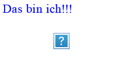
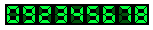
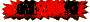
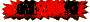
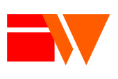
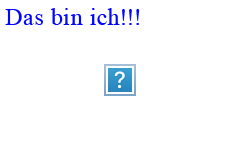
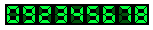
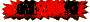
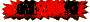
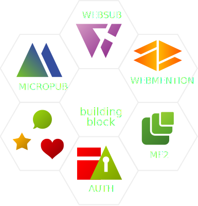

Willkommen auf meiner Webseite!!!
Willkommen auf meiner Webseite!!!
 Herzlichen Glückwunsch, Du bist Besucher Nr. .
Es ist jetzt Uhr
 



Deine Daten. Dein Netz.
IndieIndependentIndividualWeb
Willkommen auf meiner Webseite!!!
 Herzlichen Glückwunsch, Du bist Besucher Nr. .
Es ist jetzt Uhr
 


(Bloggen ist wieder „nerdy“)
I don't care about federation,
I care about my content,
I care about my friends.
auf dem Weg ins IndieWeb

Freier Zugriff auf die Inhalte
If you can't cURL it,
it's not on the web.
„Publish on your Own Site, Syndicate Elsewhere“
„Publish Elsewhere, Syndicate to your Own Site“
POST /webmention-endpoint HTTP/1.1
Host: toms.blog
Content-Type: application/x-www-form-urlencoded
source=https://lotte.me/reply-to-toms-article&
target=https://toms.blog/awesome-article
November 04th - 05th, 2017
IndieWebCamp Istanbul
September 28th - 29th, 2017
IndieWebCamp NYC
September 30th - August 1st, 2017
Das Bewußtsein von Journalisten für digitales Eigentum und dessen Verteilung steigt.
Wir machen im Open Space ein IndieWebCamp und zelten mit Beispielen und Anwendungsfällen
für Journalisten, Fotografen, Redakteure und verbundene Blogger oder Plattformbetreiber.
Lerne, wie Du die Grundbausteine der IndieWeb Bewegung nutzt.
Du kannst im Zelt dein eigenes Thema starten ...
